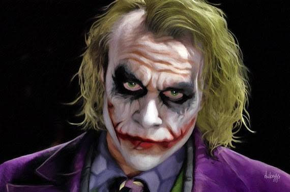
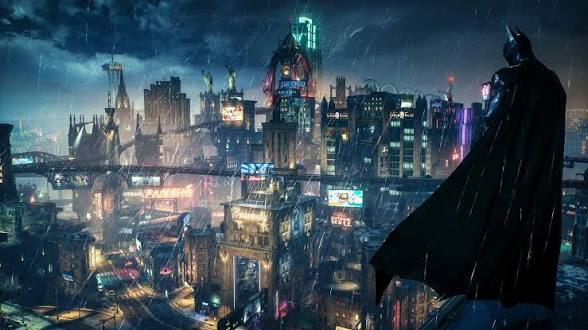
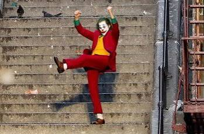
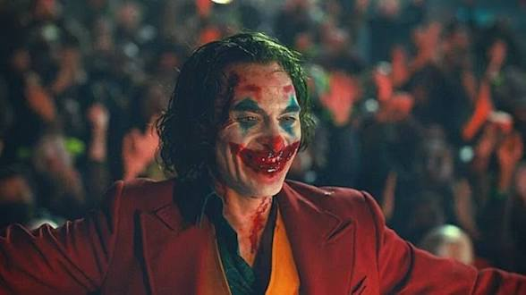
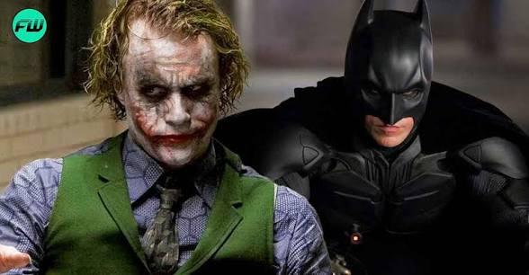
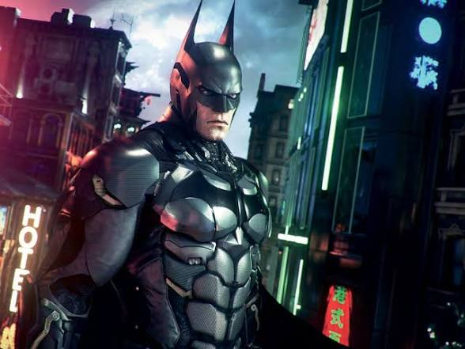
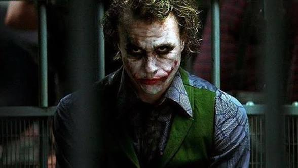

FAN GAME CONCEPT
Joker's
Successor
Gotham believed the nightmare had ended when the Joker died. But one survivor embraced the infected blood. Now a new smile rises from the shadows...

About The Game
A dark fan-inspired story set after the fall of the Clown Prince of Crime.
The Nightmare Never Ended
Gotham celebrated the death of the Joker, believing the city had finally escaped years of madness.
Unknown to everyone, one infected survivor embraced the Joker's blood instead of fighting it.
Years later, whispers of laughter echo across Gotham. A new Joker has emerged...

Game Features
Experience Gotham through investigation, strategy, and difficult choices.
🃏 Dynamic Story
Every major decision changes the fate of Gotham and its citizens.
⚔ Turn-Based Combat
Plan every move carefully using gadgets, skills, and tactical thinking.
🦇 Detective Missions
Solve crimes, collect clues, and uncover the Successor's identity.
🌆 Open Districts
Explore abandoned buildings, underground hideouts, and Gotham's dangerous streets.
👥 Iconic Characters
Meet allies and enemies from Gotham while facing new original threats.
🎭 Multiple Endings
Your choices determine whether Gotham survives or falls into endless chaos.
Gallery
A glimpse into Gotham's darkest moments.



Characters
Heroes and villains caught in Gotham's final nightmare.

Batman
The Dark Knight returns to stop the rise of a new Joker before Gotham falls into chaos once again.

Successor
A mysterious survivor who embraced the Joker's infected blood and became something even more terrifying.
Commisioner Gordon
Gotham's last hope inside the police force, fighting to keep order while the city descends into madness.
25+
Main missions
40+
Side missions
15+
Boss battles
8
Districts
Official Trailer
Witness the rebirth of Gotham's greatest nightmare.
Stay Updated
Subscribe to receive the latest development updates.